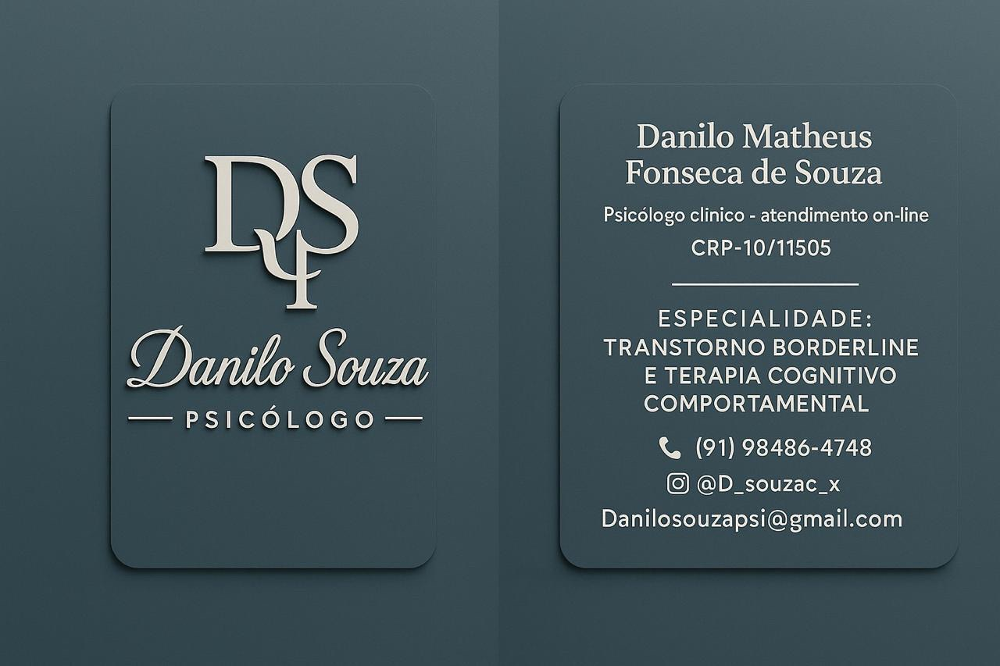
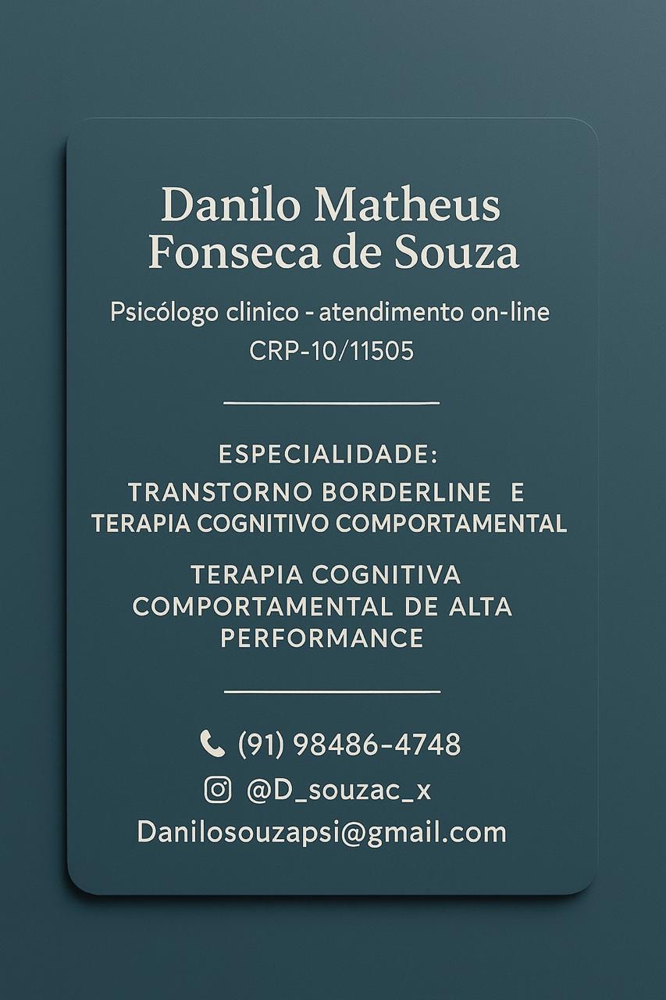
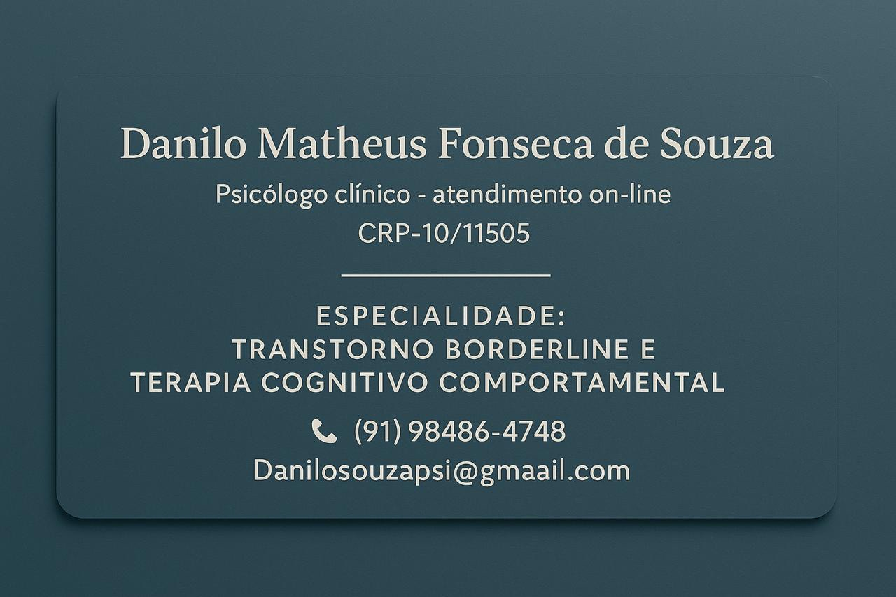

Ansiedade e sobrecarga emocional
Compreensão de sintomas, gatilhos, ruminações e construção de estratégias para lidar com a tensão constante.
Danilo Matheus Fonseca de Souza oferece atendimento clínico com abordagem centrada no entendimento das emoções, dos pensamentos e dos comportamentos, ajudando o paciente a construir mais equilíbrio, clareza e qualidade de vida.

O acompanhamento psicológico pode auxiliar pessoas que enfrentam sofrimento emocional, dificuldades nos relacionamentos, ansiedade, instabilidade afetiva, sobrecarga mental, baixa autoestima e desafios na organização da vida pessoal e profissional.
A proposta do atendimento é oferecer um ambiente ético, reservado e respeitoso, no qual cada história seja acolhida com atenção, responsabilidade técnica e cuidado humano.

A Terapia Cognitivo-Comportamental, conhecida como TCC, trabalha a relação entre pensamentos, emoções e atitudes. É uma abordagem bastante utilizada para ajudar o paciente a identificar padrões que alimentam sofrimento psíquico, desenvolver estratégias de enfrentamento e construir respostas mais saudáveis diante dos desafios do cotidiano.
O processo terapêutico não é um passe de mágica cósmico, claro. Ele exige compromisso, continuidade e abertura para reflexão. Mas, quando bem conduzido, pode favorecer mudanças consistentes na forma de sentir, pensar e agir.
Compreensão de sintomas, gatilhos, ruminações e construção de estratégias para lidar com a tensão constante.
Acompanhamento voltado para regulação emocional, relações interpessoais e reconhecimento de padrões de impulsividade e sofrimento.
Desenvolvimento de uma percepção mais saudável sobre si, seus limites, valores, capacidades e necessidades.
Reflexão sobre conflitos afetivos, comunicação, dependência emocional, frustrações e construção de relações mais equilibradas.
Trabalho terapêutico para ampliar clareza mental, tomada de decisão, foco e manejo das pressões do cotidiano.
Identificação de hábitos e respostas emocionais que mantêm sofrimento, com busca por alternativas mais adaptativas.
Um espaço de fala sem julgamento, com atenção à singularidade de cada pessoa.
Entendimento mais preciso sobre pensamentos, sentimentos, reações e conflitos internos.
Ferramentas para lidar com estresse, relações difíceis, cobranças e momentos de transição.
Fortalecimento da autonomia, do senso de identidade e da capacidade de fazer escolhas mais conscientes.
Para informações sobre disponibilidade, formato de atendimento e primeiro contato, utilize os canais abaixo.
